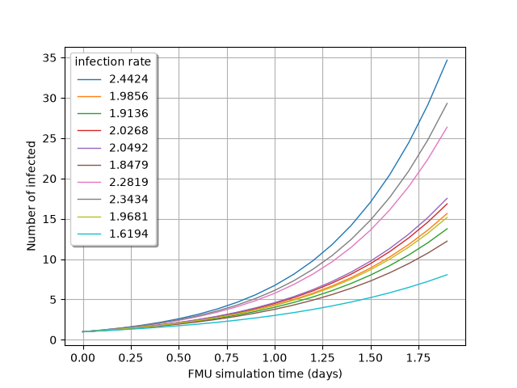

Note
Go to the end to download the full example code.
Initialize FMUPointToFieldFunction#
The interest of using FMUs in Python lies in the ease to change its input / parameter values. This notably enables to study the behavior of the FMU with uncertain inputs / parameters.
Initialization scripts can gather a large number of initial values. The use of initialization scripts (.mos files) is common in Dymola :
to save the value of all the variables of a model after simulation,
to restart simulation from a given point.
First, retrieve the path to the FMU epid.fmu.
import otfmi.example.utility
import otfmi
import openturns as ot
from os.path import abspath
import openturns.viewer as viewer
path_fmu = otfmi.example.utility.get_path_fmu("epid")
The initialization script must be provided to FMUPointToFieldFunction constructor. We thus create it now (using Python for clarity).
Note
The initialization script can be automatically created in Dymola.
temporary_file = "initialization.mos"
with open(temporary_file, "w") as f:
f.write("total_pop = 500;\n")
f.write("healing_rate = 0.5;\n")
If no initial value is provided for an input / parameter, it is set to its default initial value (as set in the FMU).
We are interested in the model output during the 2 first seconds of simulation (which corresponds to a specific moment in the epidemic spreading). We must create the time grid on which the model output will be interpolated.
mesh = ot.RegularGrid(0.0, 0.1, 20)
meshSample = mesh.getVertices()
print(meshSample)
[ t ]
0 : [ 0 ]
1 : [ 0.1 ]
2 : [ 0.2 ]
3 : [ 0.3 ]
4 : [ 0.4 ]
5 : [ 0.5 ]
6 : [ 0.6 ]
7 : [ 0.7 ]
8 : [ 0.8 ]
9 : [ 0.9 ]
10 : [ 1 ]
11 : [ 1.1 ]
12 : [ 1.2 ]
13 : [ 1.3 ]
14 : [ 1.4 ]
15 : [ 1.5 ]
16 : [ 1.6 ]
17 : [ 1.7 ]
18 : [ 1.8 ]
19 : [ 1.9 ]
We can now build the FMUPointToFieldFunction. In the example below, we use
the initialization script to fix the (non-default) values of total_pop and
healing_rate in the FMU. We can thus observe the evolution of infected
depending on the infection_rate.
function = otfmi.FMUPointToFieldFunction(
path_fmu,
mesh,
inputs_fmu=["infection_rate"],
outputs_fmu=["infected"],
initialization_script=abspath("initialization.mos"),
start_time=0.0,
final_time=5.0,
)
total_pop and healing_rate values are defined in the initialization
script, and remain constant over time. We can now set probability laws on the
function input variable infection_rate to propagate its uncertainty
through the model:
law_infection_rate = ot.Normal(2.0, 0.25)
inputSample = law_infection_rate.getSample(10)
outputProcessSample = function(inputSample)
Visualize the time evolution of the infected over time, depending on the
ìnfection_rate` value:
gridLayout = outputProcessSample.draw()
graph = gridLayout.getGraph(0, 0)
graph.setTitle("")
graph.setXTitle("FMU simulation time (s)")
graph.setYTitle("Number of infected")
graph.setLegends([f"{line[0]:.4f}" for line in inputSample])
view = viewer.View(graph, legend_kw={"title": "infection rate", "loc": "upper left"})
view.ShowAll()

Total running time of the script: (0 minutes 0.280 seconds)